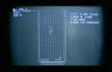
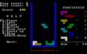
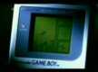

- Задача №1
- Задача №2
- Задача №3
- Задача №4
- Задача №5
Тетрисодна из случайностей, которая стала мировым достоянием
Все или почти все великие вещи создаются случайно. Дальше эта случайность (рано или поздно)
становится мировым
достоянием и меняет жизнь многих людей.
Тетрис — одна из таких случайностей. Несложная логическая головоломка, написанная в 1985 году сотрудником
Вычислительного центра при Академии наук СССР Алексеем Пажитновым для себя и своих коллег, за короткий
срок
обрела
мировую известность, спровоцировала крупный скандал, череду судебных разбирательств и, в конечном счете,
осталась в
истории как самая популярная компьютерная игра всех времен.
История
Идея тетриса родилась у Алексея Пажитнова в 1984 году после знакомства с головоломкой
американского
математика Соломона
Голомба Pentomino Puzzle. Суть этой головоломки была довольно проста и до боли знакома любому
современнику:
из
нескольких фигур нужно было собрать одну большую. Алексей решил сделать компьютерный вариант
пентамино.Пажитнов не просто взял идею, но и дополнил ее — в его игре собирать фигурки в стакане
предстояло
в реальном
времени,
причем сами фигурки состояли из пяти элементов (от греч. «п ента» — пять) и во время падения должны были
проворачиваться
вокруг собственного центра тяжести.
Но компьютерам Вычислительного центра это оказалось не под силу —
электронному
пентамино попросту не хватало ресурсов. Тогда Алексей принимает решение сократить количество блоков, из
которых состояли
падающие фигурки, до четырех. Так из пентамино получился тетрамино (от греч. «т етра» — четыре). Новую
игру
Алексей
нарекает тетрисом — от слов «тетрамино» и «теннис».
Первый вариант игры Пажитнов написал быстро, взяв за основу семь фигурок, ставших
впоследствии
стандартным
набором
тетриса. В той версии в стакан падали даже не графические изображения фигур, а их текстовые аналоги, в
которых
квадратики были составлены из открывающей и закрывающей скобки. Сделано это было не от хорошей жизни, а
вынужденно: у
компьютера «Электроника-60», на котором создавался тетрис, был даже не монитор, а дисплей, умеющий
выводить
только буквы
и цифры (никакой графики!) и только в 24 строки по 80 символов в каждой.Первая версия тетриса создавалась
на
популярном в те времена языке Pascal и выглядела достаточно примитивно. Но зато
игра работала, да еще как работала! Такая вот нехитрая идея, когда фигурки тетрамино падают, а
заполненные
ряды
исчезают, и дала впоследствии удивительные результаты.
Месяцев через восемь Пажитнов решил портировать игру на РС. В то время это было большой проблемой, потому
что сети были
еще дохленькие, а совместимых носителей не существовало (то есть, чтобы обмениваться данными между
разными
компьютерами,
надо было искать специальные диски, которые читали формат на физическом уровне). Сам Алексей опыта работы
на
РС не имел,
поэтому для портирования игры он привлек шестнадцатилетнего школьника Вадима Герасимова, который в
Вычислительном центре
слыл за юного гения и к нему все бегали за консультациями.
Перенос игры на РС занял всего три-четыре дня, еще несколько дней ушло на отладку таймера,
налаживание
работы с экраном
и тому подобные моменты. Но это было только начало, потом Алексей и Вадим еще около полугода возились с
тем,
чтобы
сделать тетрис цветным, добавить таблицу рекордов (они воспользовались уже готовой программой для вывода
на
экран,
написанной Дмитрием Павловским, коллегой Пажитнова) и систему защиты, чтобы можно было потом доказать
свое
авторство
(любой софт в СССР распространялся бесплатно, и ничего зазорного в этом не видели). Еще много сил
понадобилось на то,
чтобы добавить поддержку разных типов дисплеев (!). Сейчас это звучит смешно, но тогда единых стандартов
не
было и под
каждый дисплей игру надо было адаптировать, а это сильно портило код. На все это ушло полгода, но не
из-за
большого
объема работ, а из-за того, что и у Алексея, и у Вадима были свои дела и тетрисом они занимались лишь от
случая к
случаю.
Много позже свой вклад в тетрис внес еще Михаил Потемкин, тоже сотрудник Вычислительного центра. Он
портировал игру на
компьютер «Электроника» следующей версии и первым добавил автоматическую загрузку мусора (это когда
начинаешь партию, а
стакан уже наполовину полон).
Распространялся тетрис на набиравших тогда популярность 5,25-дюймовых дискетах путем
банального
копирования
у друзей. За
две недели игра расползлась по всей Москве, а потом и по всему СССР. Успех был просто феноменальным. Игра
была полностью
бесплатной, о том, чтобы извлечь из нее какую-то выгоду, Пажитнов даже не думал: права на тетрис были у
Вычислительного
центра (как и на любую программу, написанную в его стенах), так что Алексей скорей бы оказался в тюрьме,
чем
за
клавиатурой компьютера. Продажа подобных вещей была уже в компетенции государства.



Всемирная известность
Первыми иностранцами, познакомившимися с тетрисом, стали будапештцы из Института проблем кибернетики, с
которыми
сотрудничал Вычислительный центр (это случилось в 1986-м). Игра им понравилась, и они быстренько
портировали
ее на
компьютер Commodore 64, производившийся компанией Commodore International с августа 1982 года, и на Apple
2,
первый
компьютер, серийно выпускавшийся Apple Computer с 1977 года. Как раз в это время в Институте гостил
Роберт
Штайн, венгр
английского происхождения, владелец британской компании Andromeda Software, занимавшейся разработкой
программного
обеспечения. Штайн хорошо разбирался в играх, поэтому когда он увидел тетрис, то сразу же решил выкупить
права на него.
Роберт связался с Пажитновым, договорился о покупке прав, не называя, правда, никаких конкретных чисел,
получил
первоначальное «добро» и пообещал в течение пары дней прислать официальное соглашение. Но из-за железного
занавеса
переписка затянулась на многие недели.
Роберт Штайн.
Тем временем Штайн, понимая, какие деньги можно сделать на тетрисе, находится весь в нетерпении и, не
выдерживая и не
имея на то абсолютно никаких официальных прав, предлагает игру своим партнерам из британской компании
Mirrorsoft. Те
усомнились в привлекательности игры, но отослали ее на альтернативную пробу своим американским коллегам
из
Spectrum
Holobyte. Американцы сразу увидели, какой огромный потенциал таится в тетрисе, и отрапортовали в
Великобританию о том,
что нужно как можно скорее получить права на продажу этой чудо-игры. Результатом этого стал контракт
между
Andromeda
Software и Mirrorsoft на сумму всего лишь в 3000 фунтов стерлингов и на 7-15% (в зависимости от
количества
проданных
копий) от прибыли с продаж. Алексей обо всем этом даже не знал.
Штайну надо было как-то все это дело легализовать, и уже зимой 1985 года он отправляется в Москву с
твердым
намерением
заключить контракт с настоящими владельцами прав на игру. Однако такими вещами, как официальные
переговоры с
иностранцами и заключение договоров с зарубежными компаниями, занимались уже не сотрудники
Вычислительного
центра, а
государственные органы, в данном случае — люди из верхушки Академии наук. А людям этим предложение Штайна
оказалось
неинтересно — то ли сумма показалась маленькой, то ли они просто отнеслись к нему с недоверием. Венгру
пришлось уехать
ни с чем.
Между тем американцы из Spectrum Holobyte даже и не подозревали, что ни они, ни кто-либо еще, кроме
Пажитнова, на самом
деле не владеют правами на тетрис. Холодная война между СССР и США еще в самом разгаре, всякий русский
продукт, пусть
даже с первого взгляда ничем не примечательный, тут же вызывает интерес у американцев. Что уж говорить о
такой необычной
игре, как тетрис. Пиар-подразделение Spectrum Holobyte не дремлет и перекраивает внешне игру в
соответствии
с самыми
распространенными американскими стереотипами: добавляют коммунистических зарисовок, портреты известных
русских, пускает
в качестве музыкального сопровождения русские народные песни вроде «Калинки-малинки» и «Эх, ухнем!».
Нетронутой остается
только игровая механика. В общем, тетрис на глазах превращается в полноценный коммерческий продукт, у
которого должен
быть и разработчик, и обладающий соответствующими правами издатель.
На дворе был уже 1987 год, в Америке и Британии Spectrum Holobyte уже вовсю готовили
PC-версию тетриса,
а
у
Штайна
по-прежнему не было прав на игру, то есть релиз, по сути, был незаконным. Штайн никак не мог получить
права
и в то же
время не знал, как сказать своим коллегам из Европы и США, что запуск игры необходимо отложить. В итоге
он
так ничего не
сделал и никому ничего не сказал.
В 1988 году состоялся релиз западной PC-версии тетриса.
Теоретические проблемы
Обычно игрок проигрывает из-за того, что не может справиться со слишком быстрым темпом игры или
потому,
что данная
реализация реагирует на клавиши слишком медленно по сравнению с ускоряющимся темпом падения фигурок,
вследствие чего
игрок уже не может в принципе приложить достаточное количество сдвигов к фигурке.
Была опубликована статья, автор которой доказывает, что даже если бы игрок реагировал
мгновенно и
всегда
принимал
правильные решения, то и в этом случае он бы в конечном счёте проиграл. Проблемой являются S- и
Z-образные
фигурки.
Достаточно большое количество S-фигурок заставит игрока оставить дырку в правом нижнем углу.
Достаточно
большое
количество Z-фигурок после этого заставит игрока оставить дырку в левом углу следующего ряда, не заполнив
предыдущую
дырку.
Если после этого опять выпадет достаточно много S-фигурок, достаточно много Z-фигурок, и так
много
раз,
заполнится (с дырками по краям) всё поле, и для следующей фигурки места не останется. Если генератор
случайных чисел
идеален и выдает дискретное равномерное распределение, любая (в том числе и такая) комбинация рано или
поздно
выпадет[21].
Однако среднее время, через которое выпадет такая комбинация, огромно и превышает время
существования
Вселенной. Тем не
менее не исключено, что существует какая-то другая, более трудная для доказательства причина, по которой
идеальный игрок
должен проиграть намного раньше указанной верхней границы.
Некоторые задачи, возникающие перед игроком в ходе игры, являются NP-полными.
Однако среднее время, через которое выпадет такая комбинация, огромно и превышает время
существования
Вселенной. Тем не
менее не исключено, что существует какая-то другая, более трудная для доказательства причина, по которой
идеальный игрок
должен проиграть намного раньше указанной верхней границы.
Некоторые задачи, возникающие перед игроком в ходе игры, являются NP-полными.
Домашняя работа № 6
Задача №1
Задача №1.Сделать из блока круг размером 200 на 200px. Задача №1.Сделать из блока круг размером 200 на
200px. Задача №1.Сделать из блока круг размером 200 на 200px.
Задача №2
Добавить в див три параграфа и сделать все вместе прозрачным на 50%. Добавить в див три параграфа и
сделать все вместе прозрачным на 50%. Добавить в див три параграфа и сделать все вместе прозрачным на
50%.
Добавить в див три параграфа и сделать все вместе прозрачным на 50%. Добавить в див три параграфа и
сделать все вместе
прозрачным на 50%. Добавить в див три параграфа и сделать все вместе прозрачным на 50%.
Добавить в див три параграфа и сделать все вместе прозрачным на 50%. Добавить в див три параграфа и
сделать все вместе
прозрачным на 50%. Добавить в див три параграфа и сделать все вместе прозрачным на 50%.
Задача №3
Сделать ровную границу для спана с текстом. Сделать ровную границу для спана с текстом. Сделать
ровную границу для спана с текстом. Сделать ровную границу для спана с текстом. Сделать ровную границу
для спана с текстом. Сделать ровную границу для спана с текстом. Сделать ровную границу для спана с
текстом. Сделать ровную границу для спана с текстом. Сделать ровную границу для спана с
текстом.
Задача №4
Сделать блок с 4мя разными границами. Сделать блок с 4мя разными границами. Сделать блок с 4мя
разными границами. Сделать блок с 4мя разными границами. Сделать блок с 4мя разными границами. Сделать
блок с 4мя разными границами. Сделать блок с 4мя разными границами. Сделать блок с 4мя разными
границами. Сделать блок с 4мя разными границами.Сделать блок с 4мя разными границами.
Задача №5